Episode 48
Why Some People Can Fix Anything!
21 min · free on YouTube
47 episodes · B1 · twenty minutes
Twenty minutes, one story, two hosts. Josh is still learning, and Emma explains each hard word as it lands.


Episode 48
21 min · free on YouTube
Episode 46
23 min · free on YouTube
Episode 45
20 min · free on YouTube
Episode 44
19 min · habits · free on YouTube
Episode 43
22 min · speaking · free on YouTube
Episode 42
18 min · habits · free on YouTube
Pick a game, then choose a word to begin. Everything stays on this device.
Tap a word, then its meaning. Three pairs — right answers earn XP.
Pick a word to start.
The word is on screen — say it out loud, then play it and check yourself.
automatic
Play it, say it, then pick the meaning.
Tap or click the words to build the sentence. Tap a word in your line to send it back.
Words left
Tap the card to see the meaning, then tell it honestly: do you know this word?
Every episode has its own guide: the full transcript, the word list and one writing prompt. Pick any episode below, or take the newest one. Its email gate sends the PDF straight back. Nothing is sold to anyone.
No. If you can follow a slow conversation and lose a few words, you are in the right place. Emma explains the hard words as they come.
Between nineteen and thirty-one minutes. Most sit around twenty-two.
Yes. Every episode is free on YouTube, and the study guide is free with an email.
Anywhere. Start with Episode 48, or pick any title that sounds like your week.